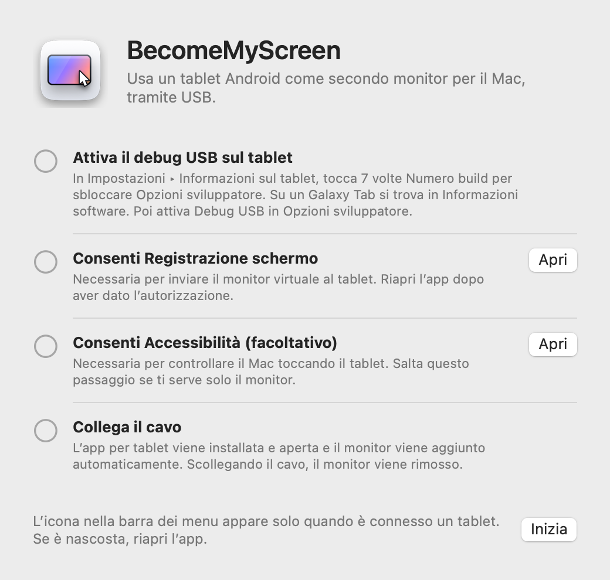
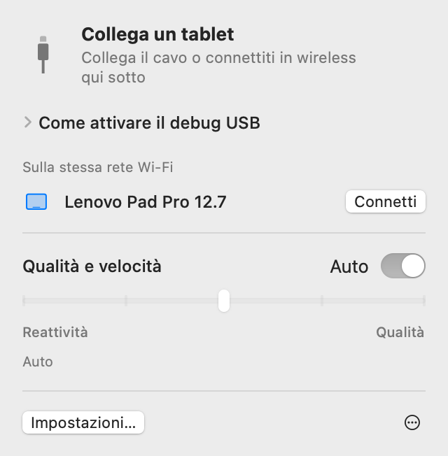
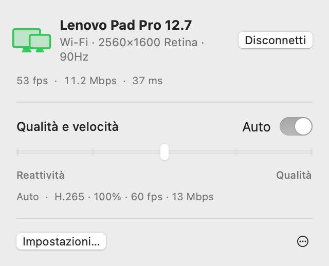
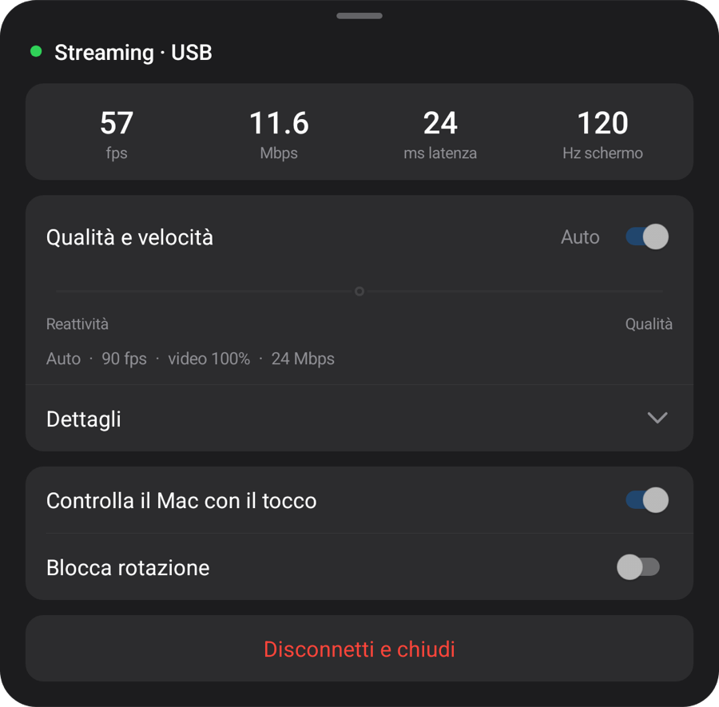
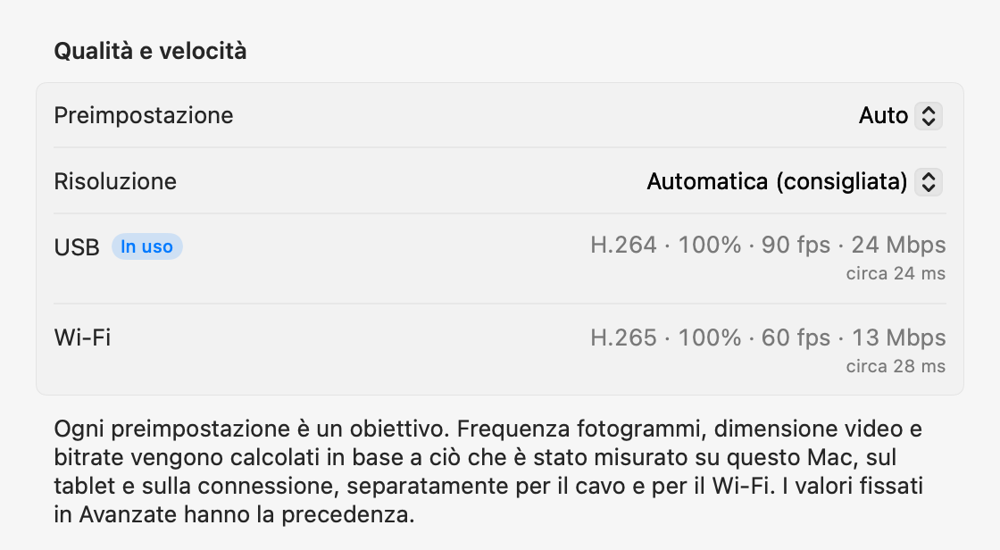

macOS + Anteprima Windows
Il tuo tablet.
Lo schermo del tuo computer.
Uno schermo in più per il Mac. Un’anteprima di duplicazione per Windows. Collega il tablet Android via USB: il computer installa e apre l’app del tablet.
Apri lo zip, sposta l’app nella cartella Applicazioni e aprila. Per la prima connessione, consulta Configurazione.
Apri questa pagina sul computer per scaricare l’app per Mac o Windows.

1.0.0 Preview 1
Anteprima Windows
Ora su Windows 11. App native per Intel/AMD x64 e ARM64 in un unico download.

Estrai tutto il file ZIP e avvia Start-Mirroring.cmd. Su una macchina virtuale usa Start-Mirroring-VM.cmd. Abilita il debug USB sul tablet e autorizza la connessione. Il motore video viene scaricato al primo avvio; serve Internet.
Configurazione, funzioni e misurazioni seguenti riguardano la versione Mac. Per Windows, segui la guida all’anteprima qui sopra.
Configurazione
La configurazione si fa una sola volta. Poi, collegando il cavo si aggiunge il monitor, e sulla stessa rete Wi‑Fi si connette senza cavo.
-
Installa l’app per Mac
Apri lo zip scaricato, sposta BecomeMyScreen nella cartella Applicazioni e aprilo. Consenti Registrazione schermo, poi apri di nuovo l’app.
-
Attiva il debug USB sul tablet
In Impostazioni › Informazioni sul tablet, tocca sette volte Numero build per sbloccare Opzioni sviluppatore. Su un Galaxy Tab si trova in Informazioni software. Poi attiva Debug USB in Opzioni sviluppatore.
-
Collega il cavo
Quando il tablet chiede se consentire il debug USB, seleziona “Consenti sempre da questo computer” e tocca Consenti. Il Mac installa e apre l’app per tablet, poi aggiunge il monitor. Non c’è un’app per tablet da scaricare a parte.

Velocità
Il tempo che passa da quando il Mac cattura lo schermo a quando il tablet lo disegna. Misurato con un Lenovo Pad Pro 12.7 e un Mac con M4 Pro.
| Dimensione video | 60 fps | 120 fps |
|---|---|---|
| 100%2560×1600 | 20 ms | 24 ms |
| 75%1920×1200 | 14 ms | 19 ms |
| 50%1280×800 | 11 ms | 16 ms |
L’encoder hardware dei chip Apple comprime lo schermo in H.264 e lo invia tramite USB, e il decoder hardware del tablet disegna ogni fotogramma appena arriva. Alla prima connessione, Auto misura quanto riesce a gestire il decoder e sceglie la frequenza fotogrammi più alta che non resta indietro. Su questo tablet ha scelto 90 fps.
Come è stato misurato: dopo aver corretto la differenza tra gli orologi dei due dispositivi, abbiamo misurato il tempo tra la cattura di un fotogramma da parte del Mac e il disegno dello stesso fotogramma da parte del tablet.
Wireless
Un tablet collegato una volta tramite USB funziona anche in wireless sulla stessa rete Wi‑Fi. Scollega il cavo mentre lavori e lo schermo continua via Wi‑Fi.
- Connessione
- Apri l’app sul tablet e apparirà nell’elenco “Sulla stessa rete Wi‑Fi” nella barra dei menu del Mac. Fai clic su Connetti e appare lo schermo.
- Scollegamento
- Passa al Wi‑Fi in meno di un secondo. Il monitor virtuale e la disposizione delle finestre restano invariati, e ricollegando il cavo si torna a USB.
- Sicurezza
- La chiave per le connessioni wireless viene scambiata solo tramite il cavo USB. La connessione viene stabilita solo dopo la verifica della chiave, e schermo e input sono interamente crittografati con AES-256-GCM.
- Ritmo adattivo
- Il tablet conferma ogni fotogramma ricevuto, e il Mac salta tanti fotogrammi quanti sono quelli in ritardo e regola il bitrate. Anche quando il Wi‑Fi rallenta per un momento, il ritardo non si accumula.


| Connessione | Latenza | Note |
|---|---|---|
| USB | Circa 20–25 ms | La frequenza fotogrammi massima del tablet |
| Wi‑Fi 5 GHz | 40–55 ms | 60 fps; il bitrate aumenta automaticamente fino all’impostazione di qualità |
| Wi‑Fi 2.4 GHz | 40–65 ms | A volte la latenza supera i 100 ms, e l’immagine può sembrare a scatti |
Misurato con un Lenovo Pad Pro 12.7 a 2560×1600 con contenuti in continuo cambiamento. Se il tablet è sul Wi‑Fi a 2,4 GHz, l’app suggerisce di passare a 5 GHz.
Qualità e reattività
Scegli uno dei cinque livelli o lascia Auto. Puoi cambiarlo dalla barra dei menu del Mac o dal menu del tablet, e cambia su entrambi.
| Preimpostazione | Frequenza fotogrammi | Dimensione video | Bitrate |
|---|---|---|---|
| Auto | 90 fps | 100% | 24 Mbps |
| 1Massima reattività | 120 fps | 50% | 8 Mbps |
| 2Alta reattività | 120 fps | 75% | 14 Mbps |
| 3Bilanciato | 90 fps | 100% | 24 Mbps |
| 4Alta qualità | 90 fps | 100% | 33 Mbps |
| 5Massima qualità | 60 fps | 100% | 39 Mbps |
Misurato con un Lenovo Pad Pro 12.7 (2560×1600, 120 Hz) collegato tramite USB a un Mac con M4 Pro. Ogni preimpostazione è un obiettivo: su un altro Mac o tablet, e tramite Wi‑Fi, calcola i propri valori in base a ciò che è stato misurato. Auto equivale a Bilanciato.
La dimensione video si imposta separatamente dalla risoluzione vista dal Mac. Un video più piccolo riempie comunque lo schermo del tablet, alleggerisce il carico del decoder e riduce di conseguenza la latenza.
Alla prima connessione, l’app misura il cavo, l’encoder video di questo Mac e il decoder del tablet in ciascuna delle sue modalità, in circa 10 secondi; la prima volta tramite Wi‑Fi, misura la rete. Ogni preimpostazione si adatta a questi numeri, separatamente per il cavo e per il Wi‑Fi, e nelle impostazioni Avanzate puoi fissare qualsiasi valore per ogni connessione. Se il cavo è lento, l’app ti suggerisce di sostituirlo.


Touch
Tocca il tablet e il Mac lo riceve come input del mouse. Si attiva quando consenti Accessibilità sul Mac.
| Sul tablet | Sul Mac |
|---|---|
| Tocco | Clic |
| Trascinamento | Trascinamento |
| Trascinamento con due dita | Scorrimento |
| Tocco con due dita | Clic destro |
| Tocco con tre dita | Apre il menu del tablet |
| Disegno con la penna | Arriva sul Mac come input da tavoletta grafica, con pressione e inclinazione |
| Penna o mouse sospesi sopra lo schermo | Sposta il puntatore. Tocca tenendo premuto il tasto della penna per fare clic destro |
Un puntatore che torna dov’era
Quando tocchi il tablet, il puntatore del Mac si sposta in quel punto. Se poi muovi un po’ il mouse, il puntatore torna dov’era prima del tocco, così non devi riportarlo a ciò che stavi facendo sul monitor principale. Puoi disattivare questa funzione in Impostazioni.
Dettagli
- Icona nella barra dei menu
-
Appare solo quando è connesso un tablet. Se è nascosta, riapri l’app e apparirà per un momento con il pannello aperto.
- In attesa
- Preparazione
- In uso
- Richiede attenzione
- Apertura dell’app per tablet
- Se l’app per tablet non è in esecuzione quando colleghi il cavo, il Mac la apre e riattiva lo schermo se è spento. Non aggira mai la schermata di blocco.
- Aggiornamenti
- L’app per Mac cerca nuove versioni e si aggiorna quando vuoi tu. Se porta con sé un’app per tablet più recente, il tablet viene aggiornato via cavo prima che il monitor si avvii.
- Verticale
- Ruota il tablet in verticale e anche il monitor virtuale viene ricreato in verticale.
- Frequenza di aggiornamento e spegnimento dello schermo
- Durante lo streaming, la frequenza di aggiornamento del tablet viene mantenuta in modo che non scenda a 60 Hz, e lo schermo non si spegne.
- Controllo del cavo
- Se la connessione USB è inferiore a 480 Mbps, i trasferimenti restano sotto 8 MB/s o la connessione si interrompe tre volte in tre minuti, l’app suggerisce di provare un altro cavo o un’altra porta.
- Quando la connessione si interrompe
- Se il cavo si scollega, lo schermo continua via Wi‑Fi. Se non può continuare in wireless, il monitor virtuale viene mantenuto per un breve periodo e, se il tablet si riconnette in quel tempo, la disposizione delle finestre resta com’era.
- Disconnetti e Riconnetti
- Fai clic su Disconnetti nella barra dei menu e lo schermo del tablet viene messo da parte, anche con il cavo collegato. Fai clic su Riconnetti per riprendere.
- L’app per tablet si chiude da sola
- Quando al tablet non è collegato nulla, nemmeno un caricabatterie, l’app per tablet si chiude da sola dopo 10 secondi. Se invece può attendere una connessione wireless, attende 2 minuti.
Requisiti
- Mac
- Mac con chip Apple, macOS 14 o versioni successive
- Windows
- Windows 11 · Intel / AMD x64 · ARM64 · Anteprima Windows
- Tablet
- Android 8.0 o versioni successive, su un dispositivo in cui è possibile attivare il debug USB
- Cavo
- Un cavo USB che supporti il trasferimento dati. I cavi di sola ricarica non si connettono. Una porta sul Mac stesso è più affidabile di un hub.
- Wireless
- Il Mac e il tablet devono essere sulla stessa rete Wi‑Fi; è consigliato il 5 GHz. La prima connessione deve avvenire tramite USB.
- Autorizzazioni sul Mac
- Registrazione schermo. Inoltre Accessibilità per controllare il Mac con il tocco, e Rete locale per usarlo in wireless.
Domande frequenti
Anteprima Windows
Questa anteprima duplica lo schermo esistente. Windows ha bloccato l’installazione del driver nel nostro ambiente ARM64: usa lo ZIP sui PC interessati. Lo schermo esteso sui PC x64 fisici non è ancora stato verificato. Note di rilascio e limiti noti
Devo installare un’app sul tablet?
No. L’app per tablet è inclusa nell’app per Mac, quindi quando colleghi il cavo il Mac la installa e la apre. Quando aggiorni l’app per Mac, anche l’app per tablet viene aggiornata alla connessione successiva.
Funziona via Wi‑Fi?
Sì. Dopo il primo collegamento tramite USB, da quel momento si connette in wireless sulla stessa rete Wi‑Fi. Apri l’app sul tablet e fai clic su Connetti nella barra dei menu del Mac, oppure scollega semplicemente il cavo mentre lo usi. La latenza è un po’ più alta che via USB (40–55 ms a 5 GHz) e il Wi‑Fi a 2,4 GHz può andare a scatti di tanto in tanto, quindi è consigliato il 5 GHz.
Perché la prima connessione deve avvenire tramite USB?
Perché la chiave per le connessioni wireless viene scambiata solo tramite il cavo. In questo modo nessun altro dispositivo sulla stessa rete Wi‑Fi può fingersi il tuo tablet e connettersi al tuo Mac. In quel momento viene anche installata l’app per tablet.
La pressione della penna funziona?
Sì. Pressione e inclinazione della penna arrivano a macOS come input da tavoletta grafica (pressione, inclinazione e prossimità). Usa l’input stilo standard di Android, quindi la S Pen e le penne Lenovo non richiedono SDK o driver aggiuntivi. Testato con la penna per Lenovo Pad Pro 12.7.
Con quali tablet funziona?
Con qualsiasi tablet con Android 8.0 o versioni successive su cui è possibile attivare il debug USB. Sviluppo e misurazioni sono stati effettuati su un Lenovo Pad Pro 12.7 (2944×1840, 120 Hz); gli altri dispositivi non sono ancora stati testati direttamente. La risoluzione e l’orientamento del monitor virtuale seguono lo schermo del tablet al momento della connessione.
Perché non è sull’App Store?
La creazione del monitor virtuale si basa su una funzione privata di macOS, quindi l’app non può essere pubblicata sull’App Store. In compenso è firmata con un certificato sviluppatore Apple e autenticata da Apple, quindi si apre subito dopo il download.
Perché servono Registrazione schermo e Accessibilità?
Registrazione schermo cattura il monitor virtuale per inviarlo al tablet, Accessibilità trasforma i tocchi e la penna sul tablet in input per il Mac, e Rete locale trova i tablet sulla stessa rete Wi‑Fi. Lo schermo viaggia solo tramite il cavo USB o all’interno della tua rete Wi‑Fi (crittografato in wireless) e non esce mai su internet.
La connessione continua a interrompersi.
Prova un altro cavo che supporti il trasferimento dati, oppure collegalo direttamente a una porta del Mac invece che a un hub. L’app ti avvisa per prima quando la connessione USB è lenta o si interrompe spesso. Dopo una breve interruzione, il monitor virtuale viene mantenuto per 15 secondi e riprende da dove si era fermato.
E se il tablet è bloccato?
Il Mac riattiva lo schermo e apre l’app, ma non aggira mai il blocco. Sbloccalo con il PIN o la sequenza e si connette subito.
Funziona sui Mac con processore Intel?
La versione attuale è solo per Mac con chip Apple.
Scarica
Apri questa pagina sul computer per scaricare l’app per Mac o Windows.
Apri lo zip, sposta l’app nella cartella Applicazioni e aprila. Per la prima connessione, consulta Configurazione.